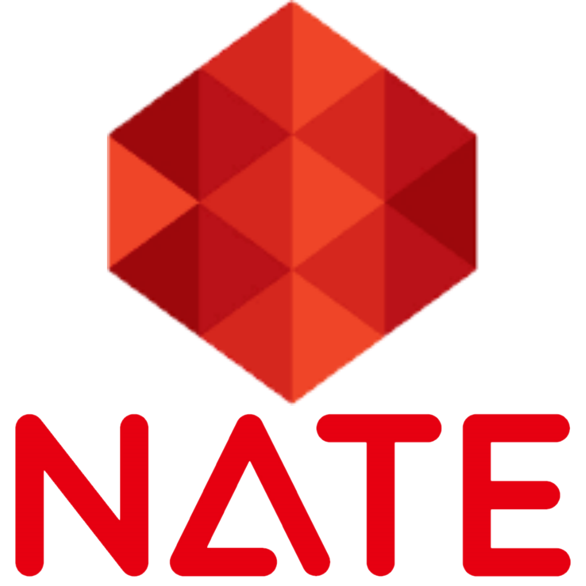

포털 사이트
구글(Google)은 구글 기업이 서비스하는 검색 엔진이다. 전 세계 압도적 1위를 차지하는 검색 엔진이기도 하다.
(출처: namu wiki)

네이버(Naver)는 대한민국 최대 포털 사이트이다. 블로그, 카페, 웹툰, 뉴스 등 여러가지 서비스를 제공하고 있다.
(출처: namu wiki)

다음(Daum)은 카카오에서 운영하는 포털 사이트이다.
(출처: namu wiki)

네이트(Nate)는 SK커뮤니케이션즈에서 운영하는 포털 사이트이다. 주요 서비스는 메일, 검색, 톡톡 등이다.
(출처: namu wiki)